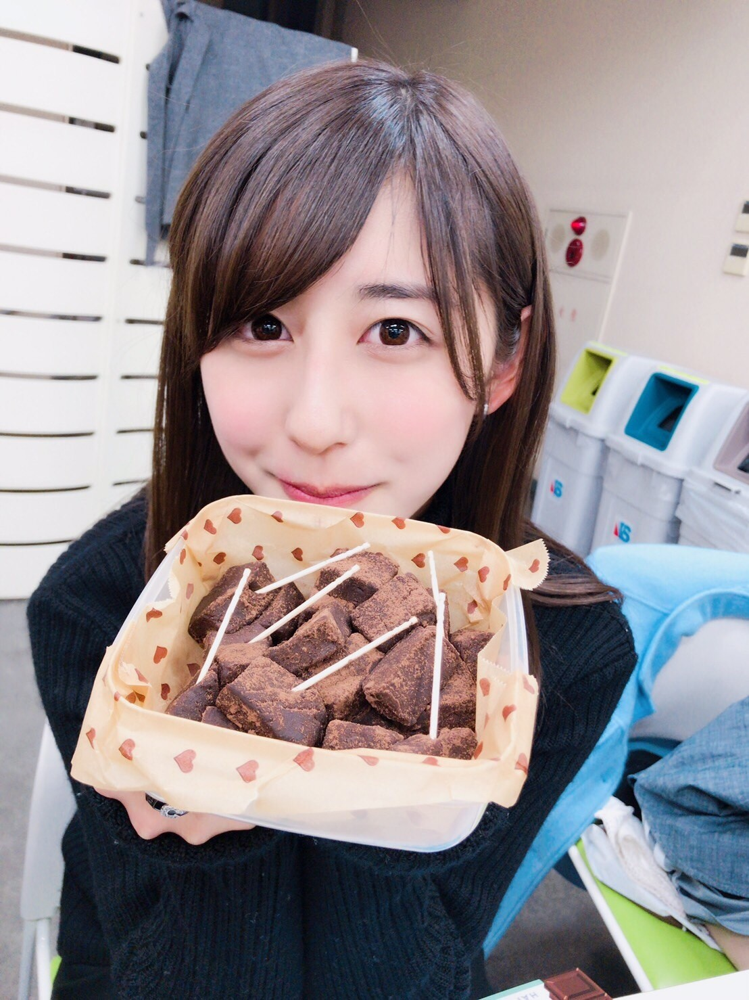
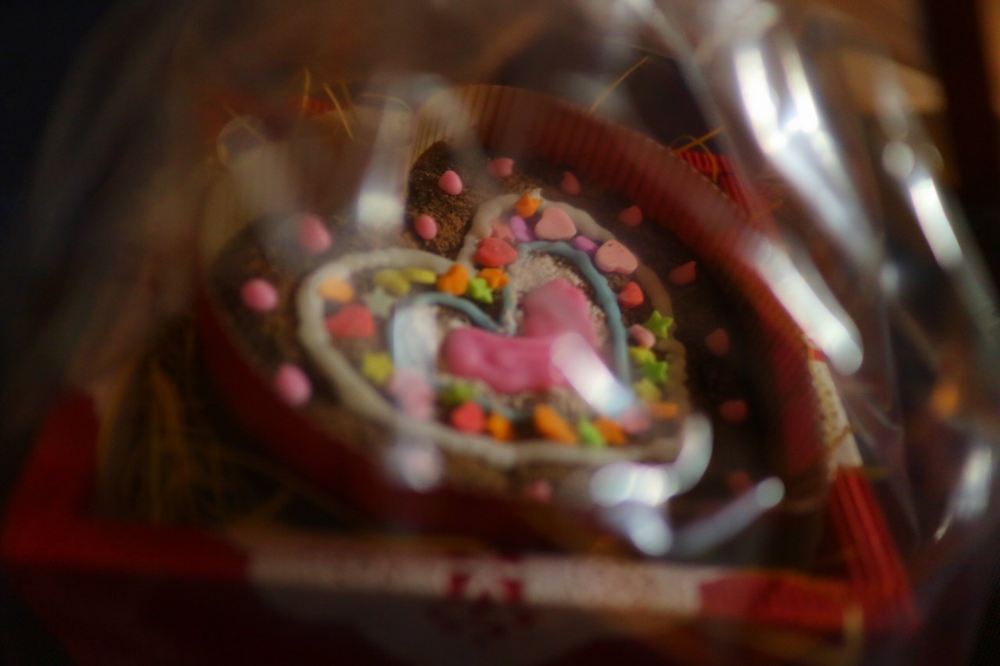
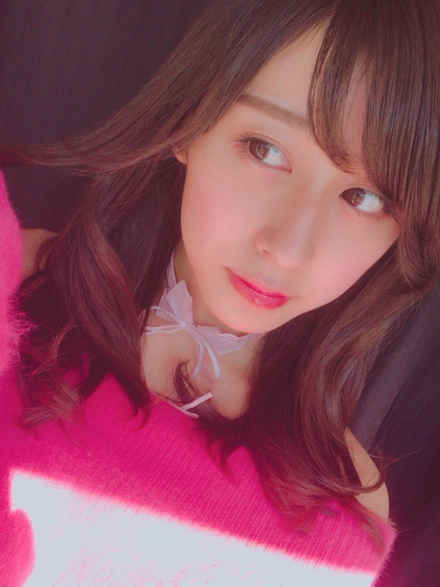

| 2017/02 14 Tue | バレンタイン。 |
ちはるーむへようこそ
今日はバレンタインデー！！
皆さんチョコ事情はどうでしょうか...
素敵な日を送っているでしょうか...
それともチョコの匂いを嗅ぐのも嫌なのでしょうか...
私は大人計画の１つとして
料理が手軽にできる女になりたいので
まずはお菓子から！！
ということで今年は
メンバーに生チョコを、
スタッフさんにはチョコマフィンを作りました(﹡ˆ ˆ﹡)
控えめに、みんなに良かったらどうぞ〜って
言ってみたんだけど
その小さな声を聞き分けて、
みんながパパッと私の所に来て
ちょうだいちょうだい♡って寄ってきてくれた
姿が本当に可愛かったし嬉しかった( ¨̮ )
少し溶けちゃって食べにくくなってたけど
みんな美味しい美味しいって食べてくれて
凄い嬉しかったよ〜！
これからはバレンタインだけではなくて
何にもない日にも作れる女子になりたいな◎

純奈が撮ってくれました。
顔あんまりメイクしてなくてごめんね...！！

これは月刊エンタメの撮影の時に
私がデコレーションしたケーキ！！
デコレーション、楽しかったな〜♡
ガトーショコラにデコレーションしたんだけど
実はこのガトーショコラ、
スタッフさんが作ってきてくださって...
めっちゃ美味しかったヽ(；；)丿
次お会いした時は絶対レシピ聞く！
と決めています◎笑
チョコ好きな私としては
バレンタインは楽しい日です☺︎
------------------------------------------------♡
！ChihAnswer！
 ラコさん
ラコさん
・ちーちゃんかバレンタインにもらって嬉しいチョコはなに？
→私はチョコなら何でも好きだから
何でも嬉しいんだけど、
実はフォンダンショコラが大好きだから
フォンダンショコラが嬉しいかな〜！
あとはトリュフとか生チョコとか。
とろける系が好きかも◎
インディさん
・ちはるさんのお母さんもアメフトファンですか？
→勿論です！！
お母さんは大学時代に
アメフト部のマネージャーだったからね◎
ルールもポジションもバッチリだよ！
最初の頃はお父さんの試合観ながら
お母さんに解説してもらってたもん。
ほのかー。さん
・もし男の子に生まれ変わったら何になりたい？
→絶対に何かになりたい！
っていうのはなくて、
ただ幸せな人生が送れたらいいんだけど
絶対にアメフトはやりたいと思う！
小学校中学校はサッカーをして
高校からはアメフトをするのが憧れる。
DAYAN⊿さん
・20代になって初めて挑戦してみたいことはなんですか？私は一人旅がしたいな〜
→私も！私も一人旅したい！
自分1人で行きたい所に行って
食べたいもの食べて
買いたいものを好きなように買って
のんびりとした時間を過ごせたら
絶対幸せだと思うんだよね！
20歳になったら10代よりは制約も
なくなってると思うから自由な気がするし。
またの名をさん
・月刊エンタメの撮影で使用したチョコは最後どうしたの〜？
→上のチョコかな？
それとも、カップケーキの方かな？
チョコは持って帰ったんだけど
カップケーキの方は持ちきれなくて
持って帰れなかった...
でもあのホイップクリーム、
お家で使ったことあるから
今度自分でもカップケーキ作って
みようかな〜って思ってるよ◎
20代になるにあたっての抱負は？とか
10代はどんな年だった？とか
年齢に関わる質問が多かったので
誕生日付近で答えたいと思います☺︎
沢山の質問今回もありがとうございました！！
------------------------------------------------♡
♬ ChihaMusic
「バレンタイン・キッス」国生さゆりさん
バレンタインって言ったら
この曲かな〜と思います！
ずっと頭の中をぐるぐる回ってる。
たまにカラオケでも歌いたくなる。
"甘い甘い恋のチョコレート
あなたにあげてみても 目立ちはしないから
私ちょっと最後の手段で決めちゃう"
この部分が好き。
女の子の少し小悪魔な部分が
最高に可愛い。
歌いたくなっちゃう。

バレンタインはピンクかなーって思って。
私こう見えてピンク大好きなんだよー\( ˆ ˆ )/
おやすみ
斎藤ちはる
コメント(292)
2017/02/14 23:58